비중격만곡증
약 안 듣는 코막힘,
원인을 모르겠다면?
숨 쉴 때 유난히 한쪽 코만 답답하고 막히시나요?
코 안 구조를 먼저 확인해 볼 필요가 있습니다.
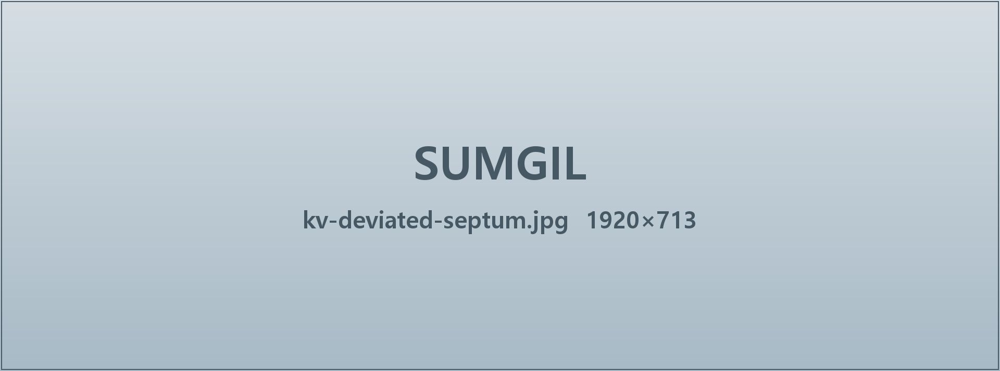
비중격만곡증 증상
밤엔 뒤척이고, 낮엔 하루 종일 답답한 코
구조적 원인을 바로잡아 편안하게
SEPTUM DEVIATION
코막힘, 근본적인 원인부터
바로잡아야 합니다.
약으로 잠시 편해져도 코 안 구조가 휘어 있다면 코막힘은 반복될 수 있습니다.
정확한 원인을 찾기 위해서는 비염뿐 아니라 비중격만곡증도 함께 확인해야 합니다.
코막힘 증상 등 환자 1,906명을 조사한 연구 결과
4명 중 3명 이상, 비중격만곡 확인
* 출처: 코막힘 환자의 해부학적 요인에 관한 국내 이비인후과 학회 보고(2018)
- 부모 자식 간의 유전
부모님 유전자를 이어 받는 경우
- 분만 시 생기는 외상
분만 시 가해지는 압박으로 비중격 연골이 휘어지는 경우
- 생활 속 외상
외부 충격으로 인해 변형이 생기거나 휘어지는 경우
비중격만곡증이란?
강남점 윤석영 원장님이 소개하는 비중격만곡증 수술,
비중격만곡증에 대해 영상으로 자세히 확인해보세요.
비중격만곡증,
방치하면 어떻게 될까요?
비중격만곡증을 치료하지 않고 방치하게 되면 비염·축농증 증상의 악화, 만성 코막힘 등 일상생활의 불편으로 이어질 수 있습니다.
- 01
만성 코막힘
지속적인 코막힘으로 답답한 호흡이 반복될 수 있습니다.
- 02
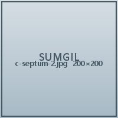
비염·축농증 증상 악화
분비물이 쌓이며 비염과 축농증이 더욱 심해질 수 있습니다.
- 03
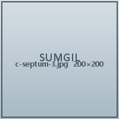
두통으로 집중력 감소
원활하지 않은 호흡으로 두통이 반복되며 일상생활에도 영향을 줍니다.
- 04
수면장애·수면무호흡
수면 중 호흡이 원활하지 않아 숙면을 방해하고 피로가 누적됩니다.
비중격만곡증,
약물로 치료할 수 있을까요?
약물은 붓기와 분비물을 줄여 일시적으로 편안하게 해 줍니다. 다만 휘어진 연골과 뼈 자체를 되돌리지는 못하기 때문에, 구조가 원인일 때는 교정이 필요합니다.
- 01
약물 치료
붓기와 염증을 줄여 증상을 완화합니다. 구조 자체는 그대로 남습니다.
- 02
비수술 시술
점막을 줄여 통로를 넓히지만 휘어진 정도가 크면 한계가 있습니다.
- 03
비중격 교정술
휘어진 부분만 최소로 다듬어 통로를 바로잡는 근본 교정입니다.
17만례 임상 경험으로
축적된 숨길 수술
비중격만곡증은 수술로 교정이 필요한 구조적 질환입니다.
검증된 데이터로 안전성과 개인별 맞춤 교정을 동시에 완성합니다.
- 01
안전 우선 원칙
비중격 연골 절제를 최소화해 수술 부담과 조직 손상을 줄였습니다.
- 02
부작용 감소
축적된 코 수술 데이터를 기반으로 주요 부작용 발생 가능성을 낮췄습니다.
- 03
개인 맞춤 교정
과도한 절제 없이 개인 코 구조에 맞는 정밀 교정을 진행합니다.
일반적인 수술 방식
- 휘어진 비중격을 절제해 코막힘을 개선하는 수술 방식
- 절제 범위와 회복 상태에 따라 불편감이 나타날 수 있음
- 비중격 절제를 중심으로 기능 개선을 목표로 진행
- 막힌 숨길을 넓히는 기능적 개선 중심
- 의료기관의 진료 범위에 따라 수술 방식과 접근이 다를 수 있음
숨길이비인후과 비중격만곡증
- 안전 우선 원칙
필요 범위만 절제해 조직 손상 최소화 - 부작용 감소
축적된 경험과 데이터 기반 수술 최적화 - 개인 맞춤 교정
개인별 코 안 구조에 맞춘 교정 - 수술 방법
비중격 절제 최소화와 구조 균형 고려 - 전문성
17만례 이상 코 수술 경험 기반 진료
ONE-STEP
숨길 ONE STEP 비중격만곡증 수술
검사부터 수술, 퇴원까지 하루에 끝내는 치료!
부담은 낮추고, 건강하고 아름다운 일상을 완성합니다.
STEP 01
CT 검사 및 상담
내원 후 비중격의 상태와 코 안 구조를 확인하고, 증상과 불편의 원인을 바탕으로 체계적인 치료 방향을 상담합니다.
STEP 02
수술 전 준비
수술 전 검사, 동의서 작성, 촬영 등 안전하고 체계적인 수술 진행을 위한 준비 과정을 거칩니다.
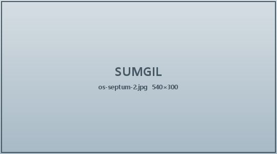
STEP 03
비중격 교정술 진행
사전에 확인한 코 구조와 치료 계획을 바탕으로 비중격의 상태를 교정하고 필요한 치료를 진행합니다.
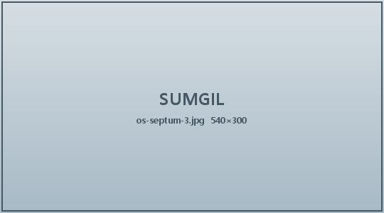
STEP 04
회복 및 당일 퇴원
수술 후 회복실에서 상태를 확인한 뒤 귀가하며, 이후에도 숨길의 평생관리를 통해 회복 경과를 지속적으로 확인합니다.
수술 방법
최소 절개 비중격만곡증 수술
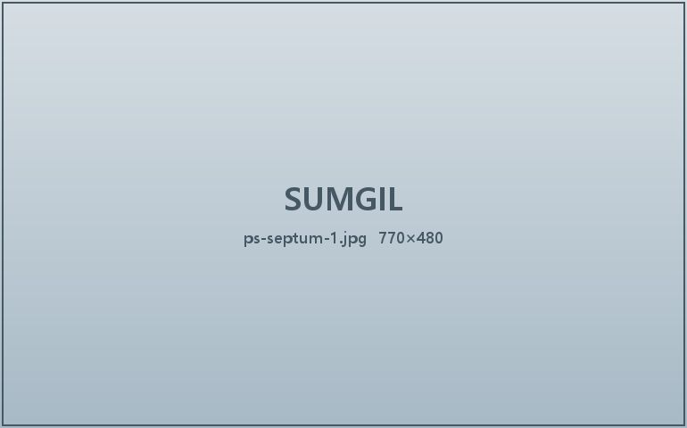
STEP 01
휘어진 부위 확인
내시경으로 비중격의 휘어진 위치와 정도를 먼저 확인합니다.
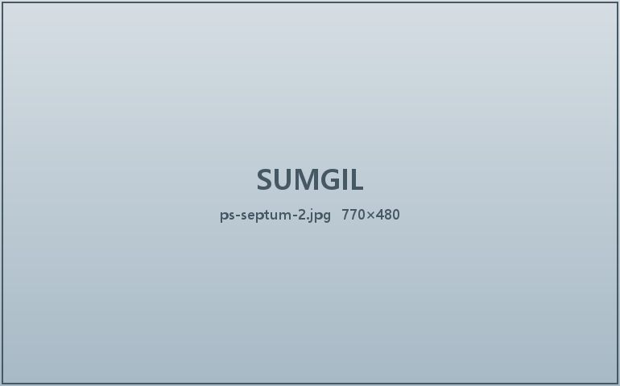
STEP 02
최소 절개 접근
점막을 조심스럽게 들어 올려 필요한 부위에만 접근합니다.
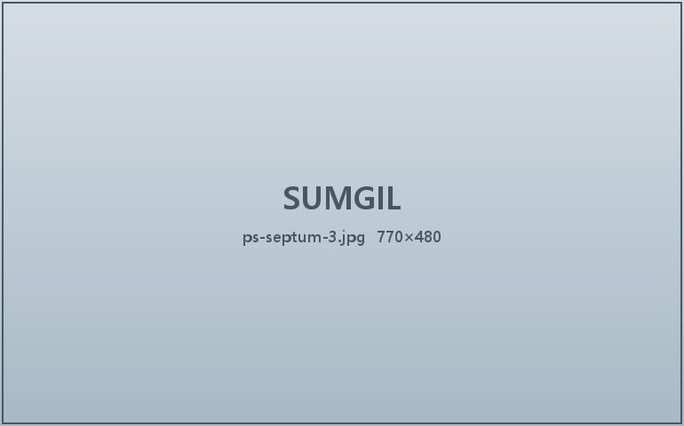
STEP 03
구조 교정과 고정
휘어진 연골을 다듬고 바로 세운 뒤 제자리에 고정합니다.
CT로 보는 변화
비중격만곡증 수술 전후
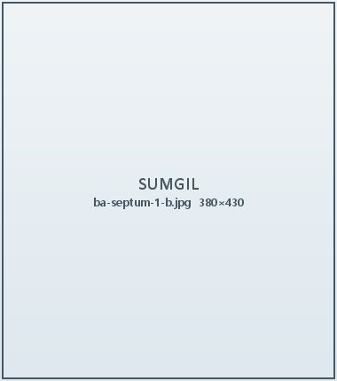
Before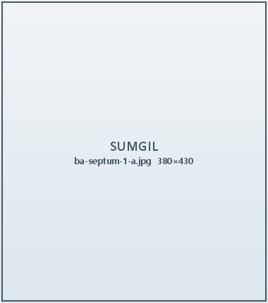
After20대 남성 · 좌측 비중격 만곡
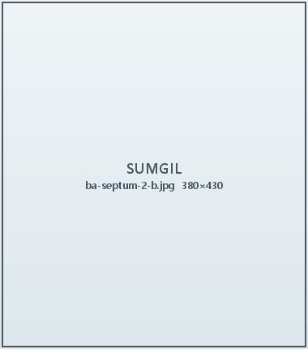
Before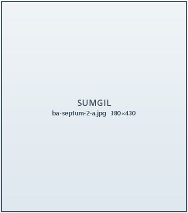
After30대 여성 · 우측 비중격 만곡 + 비후성 비염
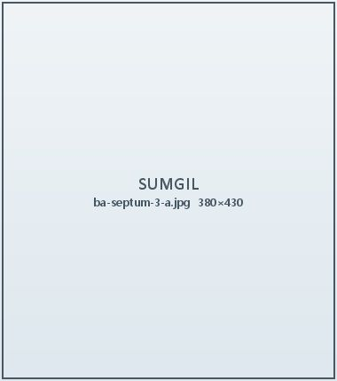
After40대 남성 · S자 만곡
숨길이비인후과가 소개된 곳
- KBS 생로병사
- MBC 기분좋은날
- SBS 모닝와이드
- 조선일보 헬스
- 중앙일보 건강
- 연합뉴스
숨길이비인후과 YOUTUBE
숨길 비중격만곡증 영상
숨길이비인후과 비중격만곡증 FAQ
-
코막힘 등 기능적 문제가 확인되면 건강보험이 적용될 수 있습니다. 적용 범위는 검사 결과에 따라 달라지므로 내원 상담 때 안내해 드립니다.
-
대부분 3~5일이면 겉으로 보이는 붓기가 가라앉고, 코 안 붓기는 2~4주에 걸쳐 서서히 빠집니다.
-
당일 퇴원이 원칙입니다. 수술 후 회복실에서 상태를 확인한 뒤 귀가하실 수 있습니다.
-
네. 하비갑개 축소술이나 부비동 내시경 수술을 함께 진행하는 경우가 많습니다.
-
교정한 연골이 다시 휘는 경우는 드뭅니다. 다만 비염이 함께 있으면 코막힘이 재발할 수 있어 같이 관리합니다.
비중격만곡증 수술 후 주의사항
- 수술 당일은 코를 세게 풀지 말고, 입으로 부드럽게 숨을 쉬어 주세요.
- 일주일 동안은 사우나·음주·격한 운동을 피해 주세요.
- 처방받은 약은 정해진 시간에 끝까지 복용해 주세요.
- 코 안 딱지는 스스로 떼지 말고 내원해 제거해 주세요.
- 피가 멎지 않거나 열이 오르면 바로 연락 주세요.
- 외래 소독 일정은 문자로 안내해 드립니다.


혹시 나도? 코 건강 1분 자가진단
코막힘·비염·수면 습관을 묻는 열 문항으로 지금 상태를 먼저 확인해 보세요.
2009년부터 이어온 선택
비중격만곡증 환자분들의 이야기
강남점 · 김ㅇ지 · 2026.08.18
수술하고 두 달쯤 지났는데 아침에 일어날 때 코가 막혀 있지 않아요. 잠을 깊게 자니 하루가 달라졌습니다.
노원점 · 한ㅇ래 · 2026.07.29
상담 때 CT를 같이 보면서 왜 막히는지 설명해 주신 게 좋았어요. 결정하기 전에 충분히 이해했습니다.
송도점 · 정ㅇ현 · 2026.07.15
회복이 생각보다 빨랐습니다. 다음 날 바로 퇴원했고 일주일 뒤부터는 일상생활에 지장이 없었어요.
일산점 · 오ㅇ빈 · 2026.06.30
숨 쉬는 게 편해지니 운동할 때가 제일 체감됩니다. 진작 할 걸 그랬어요.